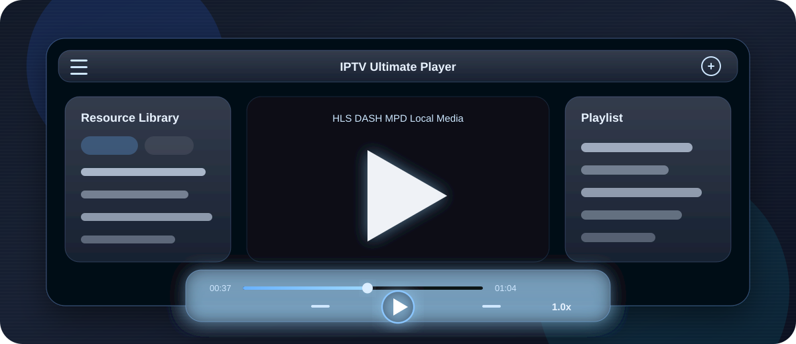
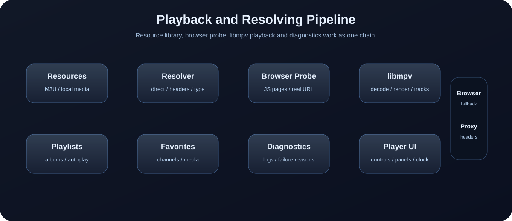

直播频道播放
支持 M3U、M3U8、TXT、JSON、CFG 等频道资源，覆盖 HLS、DASH/MPD、FLV、TS 等常见直播格式，并支持频道分组、频道详情与收藏。
面向复杂直播源、本地高清媒体库和长期可维护桌面应用的播放器方案。它把直播源管理、网页嗅探解析、浏览器播放、本地播放、收藏、播放列表和诊断日志整合到一个科技感强、体验统一的 Windows 应用里。

CORE CAPABILITIES
项目不是只解决“能不能播放”，也关注直播源如何归档、失败如何定位、本地媒体如何连播、复杂网页源如何嗅探，以及最终如何稳定打包发布。
支持 M3U、M3U8、TXT、JSON、CFG 等频道资源，覆盖 HLS、DASH/MPD、FLV、TS 等常见直播格式，并支持频道分组、频道详情与收藏。
面向视频、音频、GIF、图片等本地资源，提供流畅优先、画质优先、极致画质等渲染模式，适配普通播放和高画质播放场景。
针对需要 JavaScript、点击播放或页面触发后才生成真实流地址的网站，提供浏览器辅助探测能力，让网页可播源尽量进入播放器链路。
资源收藏和频道收藏分离管理，收藏关联持久化保存。本地文件失效后会标注状态，避免用户在列表里反复踩空。
支持按文件夹创建播放专辑，专辑可持久化保存，并能配置自动连播、跳过片头、跳过片尾等本地追剧常用策略。
对 HTTP 不可用、嗅探超时、mpv 403/404、CENC 解密失败、浏览器播放器报错等情况进行分类，结合独立日志文件定位问题。
播放器控制栏、顶部条、资源库、播放列表、设置面板采用统一深色玻璃拟态风格，突出蓝色辉光和桌面播放器质感。
仓库已提供 GitHub Actions 工作流，在 Windows runner 上安装依赖、PyInstaller 构建、Inno Setup 打包并发布 Release。
INTERFACE EXPERIENCE
直播状态优先滑出频道列表，本地播放状态优先滑出资源库。频道为空时自动回退到资源面板，避免空面板挡路。
面向本地播放，支持多个专辑、自动连播和跳过片头片尾。鼠标右边缘触发，双击播放或无操作后自动收起。
播放、停止、前后切换、进度、音量、倍率、全屏统一收纳在底部控制面板中，减少工具栏和播放区之间的割裂感。
底部控制台保持固定比例和稳定尺寸，减少图标抖动、遮挡和全屏切换时的状态错乱。
PLAYBACK PIPELINE
直播源和本地媒体进入统一资源模型后，解析器会根据格式、请求头、网页源和播放结果选择路径。失败时保留 trace 信息，方便继续提升复杂源成功率。

USAGE SCENES
项目在多个迭代阶段持续围绕真实操作问题调整：加载时不卡住界面、面板不遮挡选择、全屏切换不误触暂停、4K 播放策略可切换。
适合集中管理多个频道文件，按分组切换频道，收藏常用频道，并在 libmpv 和浏览器之间对比播放表现。
适合本地电影、剧集和音乐资源。支持资源目录加载、专辑化管理、自动连播、倍率和不同渲染模式。
当页面必须点击播放才生成真实媒体地址时，通过浏览器探测、请求捕获和失败分类，把不可见的播放链路变得可观察。
适合把项目托管到 GitHub 后，通过标签触发自动构建，生成 Windows 安装包并附加到 Release。
TECH STACK & RELEASE
当前路线以 PySide6 QWidget 保持开发效率，以 libmpv 承载播放能力，以清晰的日志和文档沉淀复杂源处理经验。
继续完善复杂源解析、浏览器播放兼容、媒体信息展示、安装包分发和 UI 细节，这个项目已经有了可以长期演进的结构。